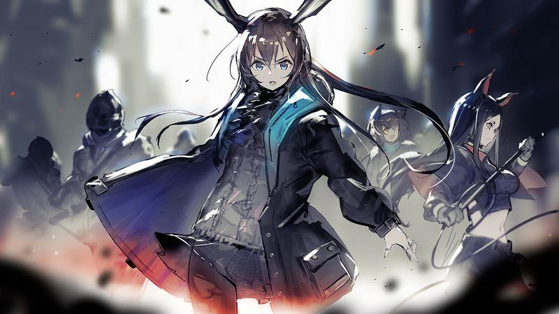

世界观背景
起因不明并四处肆虐的天灾，席卷过的土地上出现了大量的神秘矿物——被人们称为“源石”。虽然源石的发现历史已久，但是依赖于技术的进步，其蕴含的能量使得文明顺利迈入现代，但与此同时，源石本身也催生出“感染者”的存在。
身俱力量与不幸的存在，如今他们中的一部分，妄图与源石整合为一，为大地带来新的秩序。这场战火阴谋是我们对抗天灾遇到的新的阻碍。
你将作为罗德岛的一员，与罗德岛公开领导人阿米娅一同，雇佣人员频繁进入天灾影响后的高危地区，救助受难人群，处理矿石争端，以及对抗整合运动——
“罗德岛”的战术头脑，你准备好了吗？

主要剧情
在泰拉世界频繁发生的天灾中，源石成为了推动文明进步的关键资源。然而，源石也带来了矿石病，这种疾病使得感染者的出现成为社会问题。罗德岛作为一家医药研发公司，致力于研究矿石病的治疗方法，并为感染者提供庇护。
玩家作为罗德岛的领导者“博士”，需要指挥干员完成各种任务，救助受难人群，处理矿石争端，并与整合运动等其他势力进行斗争。在这个过程中，玩家将揭开源石的秘密，探索泰拉世界的复杂政治格局，并寻找治愈矿石病的方法。
同时在探索的过程中，与不同的人交流获取线索，渐渐发掘自己失忆的真相，探明自己的身份，明了自己的使命与担当，从身边的每一个平凡人开始，最终拯救整个泰拉文明。
剧情特色
《明日方舟》的剧情以其深刻的世界观和复杂的人物关系而著称。游戏通过丰富的故事情节和角色发展，展现了一个充满冲突与希望的世界。玩家将体验到紧张刺激的任务，同时也能感受到角色之间的情感纽带。
无论是与整合运动的理念冲突，还是罗德岛干员之间的深厚情谊，亦或是博士与众多干员的互相信任与依靠，都让人感受到《明日方舟》中残酷的世界观下每个人不可避免的思考与人与人之间难能可贵的温情。也让玩家思考，是否能让不同理念，不同身份，不同能力的人走到一起并共同合作？
游戏采用碎片化叙事风格，不拘泥于单个视角，而是采用多线并进的方式叙述剧情，大大提高了可读性，同时让节奏更加紧密，也有利于玩家了解这片大地上每一刻所发生的事，理解每一个剧情中鲜活的角色所遇见的改变其的事物，懂得剧情的推进是由多个角色完成的。
另外，不同于“龙傲天”式的主角，博士并不能独自掌控全局，更多是通过与众多干员相互配合，相互扶持，相互合作，共同实现不可阻挡的战斗力。在展现这种方式的过程中，有效体现了博士与干员之间的羁绊，也表现了干员对博士的信任，更让玩家感受到“罗德岛”是一个集体，同时提高代入感。